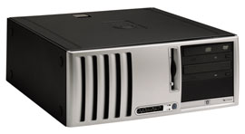

Андрей Ездаков
Начало обзора см. "BYTE/Россия" №8'2003.
Настольные компьютеры
На современном рынке настольных систем наблюдается несколько важных тенденций - растет степень интеграции компонентов, расширяются возможности подключения новых внутренних и внешних устройств через соответствующие порты. Кроме того, наблюдается заметный рост популярности ПК в небольших корпусах (меньших форм-факторов). При этом большинство корпоративных клиентов отдают предпочтение стабильным платформам со сбалансированной конфигурацией и длительным жизненным циклом. Значительное внимание уделяется также дизайну и эргономике компьютерной и оргтехники.
Отметим также широкое внедрение в практику современного бизнеса новых операционных систем (в частности, Windows XP) и офисных приложений, значительно более требовательных к параметрам ПК - производительности процессора, объему оперативной и дисковой памяти, оснащенности средствами мультимедиа и т. п.
Все это приводит к массовому переходу пользователей на компьютеры, в которых используются новейшие технологии - процессоры Pentium 4 с частотой системной шины 800 МГц и поддержкой технологии Hyper-Threading; двухканальная архитектура шины памяти (Dual DDR); интерфейс жестких дисков Serial ATA (SATA); графический интерфейс AGP 8X; сетевые адаптеры стандарта Gigabit Ethernet. Чем раньше компания перейдет на более современные технологии, тем дольше ее вычислительные средства будут отвечать потребностям организации бизнеса. Использование компьютеров современной конфигурации не только позволяет эффективно работать с современным ресурсоемким ПО, но и в перспективе повышает вероятность комфортного, безболезненного перехода на программы, находящиеся пока в стадии разработки.
С учетом этих факторов Hewlett-Packard проводит политику постепенного перехода на новые модели настольных ПК. В этой эволюции можно выделить четыре основных направления:
- унификацию типов корпусов;
- обновление дизайна;
- увеличение продолжительности жизненного цикла;
- укрепление информационной безопасности.
Унификация уже привела к тому, что число видов шасси сократилось с 10 до 6, а типов плат - с 9 до 5. В качестве стандарта для системных плат используется формат uATX. Два различных типа корпусов - Ultra small desktop (USDT) и e-pc - объединены в новый вариант USDT. Активно поддерживаются конфигурации ПК без дисководов, что снижает стоимость моделей и повышает уровень их защиты от несанкционированного доступа.
| Новые форм-факторы настольных компьютеров HP.
|
Новые дизайнерские решения привели к появлению округлых форм корпусов, не несущих опасности физических травм. Кроме того, корпуса стали эргономичнее, а доступ к отдельным компонентам - удобнее. Основное цветовое решение моделей Hewlett-Packard - это сочетание черного и серебристого цветов.
Продолжительность жизненного цикла новых моделей настольных ПК составляет не менее 15 месяцев. Всем этим условиям отвечают две новые модели настольных ПК от Hewlett-Packard. Наилучшее соотношение цены и производительности для выполнения базовых офисных операций характерно для компьютера HP Compaq D230. Эта очень недорогая полнофункциональная модель - достойная наследница Evo D310v. В D230 использован набор микросхем Intel 845GE, ОЗУ типа DDR SDRAM и слот AGP 4X для видеоадаптера. Эта модель хорошо поддерживает работу большинства классических бизнес-приложений.
Компаниям, стремящимся минимизировать начальные затраты и при этом использовать передовые технологии, обеспечивая достаточный уровень стабильности, HP предлагает настольный ПК начального уровня для решения бизнес-ориентированных задач HP Compaq D330, который выпускается в двух различных вариантах корпуса - microtower (MT) и desktop (DT). Обе разновидности корпусов обеспечивают доступ к внутренним компонентам компьютера без применения инструментов.
| Недорогой корпоративный настольный ПК - HP Compaq D330.
|
В моделях D330 используется новый набор микросхем Intel 865G, а в качестве процессора - Pentium 4 с тактовой частотой 2,4-3,06 ГГц и поддержкой технологии Hyper-Threading или Celeron с тактовой частотой 2-2,4 ГГц. Эти машины обычно оснащаются ОЗУ типа DDR-Synch DRAM PC2700 или PC3200 объемом от 128 Мбайт до 4 Гбайт, а также жестким диском стандарта SMART III Ultra ATA/100 емкостью 40-160 Гбайт.
В набор микросхем 865G встроены графическая подсистема Intel Extreme Graphics 2, аудиосистема SoundMax Digital AC'97 с внутренним динамиком и интегрированный сетевой интерфейс Broadcom NetXtreme Gigabit Ethernet. Съемный дисковод для гибких дисков позволяет оставлять соответствующее гнездо пустым или устанавливать в него другие приводы с форм-фактором 3,5 дюйма. Для расширения функциональности в компьютере имеются шесть портов USB 2.0 (четыре на задней панели и два на передней), последовательный и параллельный порты и порт RJ-45.
В числе стандартно поставляемых физических средств обеспечения безопасности для модели D330 можно назвать замок Kensington lock и блокиратор крышки. Факультативно можно приобрести средства управления портами, устройства для чтения смарт-карт (в том числе совмещаемые с клавиатурой), а также специальные замки с ключами для корпусов, устанавливаемые на заводе, и датчики вскрытия корпуса.
Корпоративным заказчикам важно соблюсти баланс, минимизируя совокупную стоимость владения и в то же время добиваясь максимального повышения стабильности и управляемости платформы. Именно для этого и предназначен новый настольный ПК HP Compaq D530 с 15-месячным жизненным циклом, который пришел на смену модели Evo D510. Новинка выпускается в трех вариантах корпуса - Convertible minitower (CMT), SFF и USDT.
|  | Корпоративный настольный компьютер HP Compaq D530.
|
Все варианты HP Compaq D530 полностью совместимы по комплектации. Они имеют ту же процессорную базу, что и HP Compaq D330, такой же набор микросхем, ОЗУ, жесткие диски и т. д. Основные отличия заключаются в значительно более широких возможностях подключения внешних устройств и обеспечения информационной безопасности.
Так, в модели HP Compaq D530 USDT имеется отсек MultiBay, позволяющий подключать накопители на оптических носителях и внешние жесткие диски, а встроенная микросхема HP ProtectTools, реализующая функции безопасности, позволяет корпоративным заказчикам более эффективно организовать защиту информации и управление доступом к сети, повысить защищенность каналов связи. Эта микросхема, разработанная в сотрудничестве с компанией Infineon Technologies, расширяет возможности защиты, заложенные в ОС Windows и программах независимых разработчиков, например, в системах шифрования и создания виртуальных частных сетей.
ProtectTools обеспечивает шифрование файлов и каталогов с помощью аппаратных средств создания и хранения ключей. Разработанная Hewlett-Packard система персональных защищенных дисков оснащена дружественным пользовательским интерфейсом и при этом позволяет упростить процедуру защиты данных на основе шифрования. Эта технология интегрируется с широко распространенными почтовыми программами, в том числе Microsoft Outlook и Lotus Notes.
Машины D530 комплектуются набором программ, единых для всей платформы, и средствами управления HP Lifecycle Solution, позволяющими оперативно развертывать рабочие места на их базе. Подобное решение помогает снизить совокупную стоимость владения парком оборудования - унификация сокращает расходы на техническую поддержку и упрощает процесс управления информационной системой.
Рабочие станции
К рабочим станциям относят самые мощные ПК, ориентированные на задачи моделирования и автоматизированного проектирования с использованием программ CAD/CAM, а также картографии, обработки двух- и трехмерной графики, видеоинформации и т. п. Сейчас рабочие станции интенсивно внедряются в сфере финансовых операций и торговли ценными бумагами. Практически в каждой крупной компании найдется круг задач для нескольких рабочих станций, даже если профиль основного бизнеса не требует работы со сложной графикой.
Hewlett-Packard предлагает пользователям шесть моделей таких "ПК повышенной мощности", из которых две - HP xw4100 и HP xw3100 - анонсированы в начале лета.
Рабочая станция начального уровня HP Workstation xw4000 базируется на наборе микросхем Intel 845E с частотой системной шины 533 МГц. В системе установлен процессор Intel Pentium 4 с тактовой частотой 2-2,8 ГГц. Объем памяти PC2100 ECC DDR SDRAM с тактовой частотой 266 МГц может составлять 2 Гбайт. Общая емкость накопителей на жестких дисках - до 240 Гбайт (диски EIDE) или до 438 Гбайт (SCSI).
Графическая подсистема может строиться на платах Nvidia (Quadro2 EX, Quadro4 200 NVS, Quadro4 400 NVS, Quadro4 750 XGL) или ATI Fire GL 8800. Для организации сетевых взаимодействий в xw4000 используется интегрированный сетевой адаптер Intel (10/100 Мбит/с). Устройство также оснащено четырьмя USB-портами (по два на передней и на задней панели) и (факультативно) портом IEEE 1394. На рабочую станцию предустанавливается ОС - либо Windows 2000/XP Professional, либо Red Hat Linux версий 7.3 и 8.0.
Высокопроизводительная однопроцессорная рабочая станция HP Workstation xw5000 заключена в корпусе minitower. В ней используется набор микросхем Intel E7205 с графической шиной AGP 8X Pro 50. Объем двухканальной памяти DDR SDRAM может достигать 4 Гбайт. Высокую производительность устройства обеспечивает процессор Intel Pentium 4 с тактовой частотой до 3,06 ГГц и мощная графическая подсистема на основе ускорителей Nvidia (Quadro2 EX, Quadro4 200 NVS, Quadro4 380 XGL, Quadro4 750/900/980 XGL), ATI Fire GL 8800 или 3Dlabs Wildcat III 6110.
Эта станция может оснащаться такими же жесткими дисками, что и xw4000. Аналогичны у нее и набор сетевых возможностей и портов расширения, а также список предустанавливаемых ОС.
Более мощные, двухпроцессорные рабочие станции HP Workstation xw6000 и HP Workstation xw8000 используют процессоры Intel Xeon с тактовой частотой до 3,06 ГГц. Обе модели базируются на наборе микросхем Intel E7505 с системной шиной 533 МГц и с графической шиной AGP 8X Pro 50. В xw6000 может быть размещено до 8 Гбайт, а в xw8000 - до 12 Гбайт ОЗУ типа PC2100 ECC DDR SDRAM с частотой 266 МГц. Используемые в устройствах видеосистемы практически аналогичны тем, которые устанавливаются в модели xw5000.
| Двухпроцессорная рабочая станция Hewlett-Packard.
|
Система xw6000 имеет пять слотов и пять отсеков расширения, xw8000 - соответственно шесть и восемь. Обе модели оснащены интегрированными контроллерами для поддержки работы жестких дисков Ultra ATA/100 (емкостью до 240 Гбайт) или двухканальным Ultra 320 SCSI (до 730 Гбайт). В них также имеются интегрированные контроллеры Gigabit Ethernet с автоматически определяемой пропускной способностью 10/100/1000 Мбит/с, четыре порта USB 2.0 и порт IEEE 1394, устанавливаемый факультативно.
Обе старшие модели рабочих станций поставляются с предустановленными ОС Microsoft Windows 2000/XP Professional или Red Hat Linux версий 7.3 и 8.0.
Новейшая модель рабочей станции серии xw, HP Workstation xw4100, оснащена процессором Pentium 4 с тактовой частотой 3,20 ГГц с частотой шины 800 МГц и поддержкой технологии Hyper-Threading. Станция базируется на новом высокопроизводительном наборе микросхем Intel 875P с технологией Intel Performance Acceleration Technology, позволяющей увеличить производительность системы.
Поскольку новинка HP Workstation xw4100 сочетает высокую производительность систем xw5000 и низкую стоимость xw4000, она должна заменить на рынке обе эти предыдущие модели однопроцессорных рабочих станций с оптимальным соотношением цена/производительность.
HP xw4100 компонуется в новом корпусе с форм-фактором Convertible minitower, что позволяет размещать компьютер на рабочем месте как в вертикальном, так и в горизонтальном положении, а также обеспечивает доступ к комплектующим без использования инструментов. В модели используется более быстрая память типа DDR400 объемом до 4 Гбайт в сочетании с высокопроизводительными графическими контроллерами 3D OpenGL и интегрированными коммуникационными портами (шесть портов USB и три - IEEE 1394). Машина также оснащена интегрированными контроллерами для поддержки работы жестких дисков Ultra ATA/100 (два диска общей емкостью до 320 Гбайт) и двухканальным Ultra 320 SCSI (три диска, до 438 Гбайт). В нее можно установить различные видеоадаптеры, в том числе Nvidia Quadro4 980 XGL (объем видеопамяти 128 Мбайт, поддерживает работу двух мониторов) и до двух оптических дисководов любого стандарта.
| Новая рабочая станция HP xw4100.
|
Еще одна рабочая станция начального уровня - компактная, но мощная HP Workstation xw3100, выполненная в новом корпусе с форм-фактором SFF. Эта машина базируется на наборе микросхем Intel i865G с интегрированным ускорителем двухмерной графики и сетевым адаптером NetXtreme Gigabit Ethernet.
Workstation xw3100 может поставляться в бездисковой конфигурации. Она строится на процессоре Intel Pentium 4 с частотой шины 800 МГц и с поддержкой технологии Hyper-Threading, в качестве ОЗУ используются модули DDR400 объемом до 4 Гбайт, предусмотрена установка графического адаптера Nvidia Quadro4 200NVS. Помимо интерфейса Ultra ATA/100 в новом аппарате присутствуют два интерфейса SATA с пропускной способностью 150 Мбит/с.
Для расширения функциональных возможностей новой рабочей станции имеется шесть портов стандарта USB 2.0 (два - на передней панели и четыре - на задней) и порт IEEE 1394. В качестве опции в устройство может быть установлен модем K56. HP Workstation xw3100 поставляется с ОС Windows 2000/XP Professional.
Тонкие клиенты
Тонкие клиенты, или компьютеры с ограниченной функциональностью, можно отнести к прямым наследникам идеи сетевого компьютера. Такие ПК только обрабатывают ввод данных или команды с клавиатуры и вывод текущего состояния рабочей сессии на экран, в то время как вся информация хранится на сервере, и там же исполняются приложения, запускаемые с тонкого клиента. Конечно, эти компьютеры ориентированы на более узкий круг задач, чем другие категории ПК. Однако у многих сотрудников компаний основные операции с ПК сводятся к трем процедурам: работе с электронной почтой; обработке информации с Web-сайтов или из баз данных и некоторому стандартному набору действий с документами. Для этой категории тонкий клиент может стать наилучшим выбором.
Ограничение возможностей пользователя при работе с ПК может оказаться полезным и для осуществления строгого контроля за выполняемыми действиями, например, в различных банковских и финансовых организациях, на режимных предприятиях и т. п. Немаловажную роль может сыграть и значительно более низкая, чем у стандартного настольного ПК, стоимость тонкого клиента. Небольшая масса и малые габариты такого устройства позволяют установить его в условиях ограниченности рабочей площади.
Все это приводит к тому, что объем продаж в секторе тонких клиентов во всем мире растет в несколько раз быстрее, чем в секторе стандартных настольных компьютеров. Этому способствует и высокая надежность компьютеров с ограниченной функциональностью (отсутствие движущихся компонентов); быстрота их развертывания; упрощенная схема модернизации ПО (все делается единообразно на сервере), контроля, администрирования и диагностики. Применение тонких клиентов позволяет радикально сократить расходы на обслуживание по сравнению с обычной инфраструктурой клиент - сервер. Кроме того, подобные компьютеры не представляют интереса для потенциальных грабителей.
В начале осени Hewlett-Packard выпустит семейство новых компьютеров этой категории - HP Compaq T5000. Сейчас рынку предлагаются две более ранние модели в семействе тонких клиентов, HP Compaq Evo T20 и T30. Они оснащаются встроенными ОС - Microsoft Windows CE.NET, Windows XP Embedded, Windows NT Embedded (с поддержкой PXE), CE 2.12. Аппараты подключаются напрямую через сеть к серверу, работающему с Windows NT/2000 или другой ОС, поддерживающей терминальный доступ.
| Тонкие клиенты HP Compaq Evo T30/T20 не содержат ни одной вращающейся детали.
|
HP Compaq Evo T20 и T30 - это небольшие неразборные устройства, массой менее 3 кг, подключающиеся к локальным сетям, в том числе и к унаследованным. Обе модели оснащены процессором National GX1 с тактовой частотой 300-333 МГц. Объем их флэш-памяти может составлять 16-256 Мбайт, а ОЗУ - 32-256 Мбайт, что обеспечивает достаточную функциональность и производительность аппаратов.
Наличие USB-портов позволяет значительно расширить возможности тонких клиентов. Через них подключаются клавиатура и мышь, выводится видеосигнал на внешний монитор с высоким разрешением. Можно также организовать связь с локальным принтером или доступ к какому-либо сетевому устройству по протоколам RDP или ICA 6. Оба устройства поддерживают все унаследованные типы подключений, к ним можно подсоединять внешний модем. Кроме того, эти тонкие клиенты имеют гнездо PCMCIA для дополнительных внешних устройств соответствующего стандарта.
Общий для всей линейки продуктов дизайн корпуса новых моделей семейства тонких клиентов HP Compaq T5000 наследует лучшие черты серии Evo T20/T30. Их конструктив позволяет проводить обслуживание без инструментов, предусмотрена как горизонтальная, так и вертикальная установка.
Кодовое наименование новых изделий - Warbirds, торговое - T5XXX. Вторая цифра в номере модели означает принадлежность к определенной серии (3 - Essentials, 5 - Mainstream, 7 - Flexible). Все три серии близки по техническим характеристикам. В моделях младшей серии устанавливается ОС CE.NET или Linux, T5500 оснащается теми же ОС и дополнительно браузером Internet Explorer или Netscape Navigator. На модели же старшей серии устанавливается Windows XP Embedded Service Pack 1 с Internet Explorer версии 6.0.
Во всех тонких клиентах семейства HP Compaq T5000 используется единый набор микросхем, их сборка целиком осуществляется на одной плате. В них монтируется специальный ультратонкий процессор Transmeta Crusoe TM5600/TM5800 с тактовой частотой от 533 МГц до 1 ГГц. Помимо флэш-памяти с максимальным объемом 512 Мбайт в старших моделях T5700 устанавливается ОЗУ типа DDR SDRAM, расширяемое до 512 Мбайт.
В моделях семейства HP Compaq T5000 используется интегрированный видеоадаптер ATI Rage XL с 8 Мбайт выделенной памяти, поддерживающий монитор VESA в различных видеорежимах с разрешением до 1280x1024. Встроенный звуковой адаптер Audio 1612A позволяет воспроизводить через внешние динамики 16-разрядное стереозвучание. В комплект поставки тонкого клиента входят 104-клавишная клавиатура Enhanced USB, USB-мышь с функцией прокрутки изображения и видеовыход VGA (DB-15).
Для расширения функциональных возможностей тонких клиентов служат четыре порта USB 2.0, последовательный и параллельный порты, разъем RJ-45 и (опционально) PCI-слот. С целью повышения уровня безопасности устройства оснащаются гнездами для замков Security Lock и дополнительно замком с защитным кабелем.
| Новый тонкий клиент из семейства HP Compaq T5000.
|
Благодаря своим специфическим качествам тонкие клиенты HP находят широкое применение в областях, связанных с вводом и накоплением значительного объема информации, таких, как связь, медицина и образование, они работают в учебных центрах, библиотеках, страховых агентствах и call-центрах. Кроме того, повышенная надежность подобных устройств позволяет применять их в неблагоприятных условиях окружающей среды.
Заключение
Слияние двух крупнейших производителей вычислительного оборудования привнесло на современный рынок ИТ новые решения, как технологического, так и организационного характера, в реализации которых учтен позитивный опыт обеих компаний. Объединение спецификаций продуктов упростило их обслуживание и позволило повысить качество сопровождения корпоративных информационных систем. За счет уменьшения количества различных линеек, представляющих однотипные ПК, упростились и задачи региональных партнеров.
Сейчас корпорация Hewlett-Packard предлагает пользователям весь спектр решений для построения автоматизированных рабочих мест. Это мобильные и планшетные ПК, широкий ассортимент настольных компьютеров в корпусах различных форматов, рабочие станции и, наконец, тонкие клиенты. Во всех компьютерах используются современные технологические решения, разные модели ориентированы на свои сегменты рынка. Благодаря новому эргономичному дизайну компьютеры HP гармонично вписываются в офисные интерьеры.
Автор благодарит Ирину Румянцеву и других сотрудников компании Hewlett-Packard за помощь при подготовке материала.